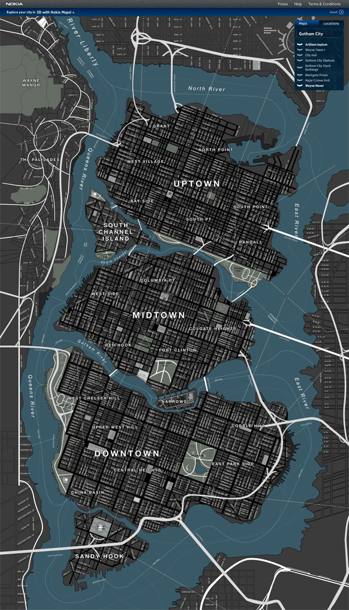

Commissioner James Gordon, Robin (his young protégé), and the enigmatic Catwoman,


who had a complex and ambiguous relationship with him.
Bruce Wayne, born to the wealthy and influential Wayne family, had a privileged upbringing.
His life changed forever when his parents, Thomas and Martha Wayne, were brutally murdered in front of him as a child.
This event triggered an obsession within Bruce to fight crime and avenge their deaths.
As he grew older, Bruce mastered a variety of martial arts and became an expert in detective work.
He used his inherited wealth to transform his family's mansion into a secret base of operations, complete with a
state-of-the-art Batcave and an array of advanced technology to aid him in his mission.
Taking on the guise of the Batman, Bruce garnered a reputation as a fierce and intimidating vigilante.
He fought against notorious criminals and deranged supervillains who threatened Gotham City, where he lived.
One of his most infamous foes was The Joker, a criminally insane clown who enjoyed causing chaos and anarchy in the city.
Batman's constant battles with The Joker caused him a great deal of mental and emotional strain,
but he remained committed to his cause.
Throughout his career, Batman worked closely with his trusted allies, including
Commissioner James Gordon, Robin (his young protégé), and the enigmatic Catwoman,
who had a complex and ambiguous relationship with him.
Despite his heroic feats, Batman was often seen as a dark and mysterious figure,
feared and mistrusted by many. However, he continued to fight for justice and to protect Gotham City,
even when faced with seemingly insurmountable odds.
Batman's legacy has endured long after his retirement, inspiring a new generation of crimefighters
and becoming a legend in his own right. His dedication to his cause, his exceptional skills, and
his unwavering determination have made him a beloved icon of heroism and justice in popular culture.
For more information visit Batman Wiki to learn more.
Here's some of the top films about the dark knight. .
| Title | Year | Director |
|---|---|---|
| Batman | 1966 | Leslie H. Martinson |
| Batman | 1989 | Tim Burton |
| Batman Returns | 1992 | Tim Burtom |
| Batman: Mask of The Phantasm | 1992 | Eric Radomski and Bruce Timm |
| Batman Forever | 1995 | Joel Schumacher |
| Batman & Robin | 1997 | Joel Schumacher |
| Batman Begins | 2005 | Christopher Nolan |
| The Dark Knight | 2008 | Christopher Nolan |
| The Dark Knight Rises | 2012 | Christopher Nolan |
| Batman Vs. Superman: Dawn of Justice | 2016 | Zack Snyder |
| The LEGO Batman Movie | 2017 | Chris Mckay |
| Justice League | 2017 | Zack Snyder |
| Batman | 2022 | Matt Reeves |
Commissioner Gordon is a key ally and friend to Batman,
serving as the head of Gotham City's police department and often relying on
Batman's help in fighting crime and corruption in the city.
Robin is Batman's trusted protégé and crime-fighting partner,
who assists him in his vigilante duties.
Catwoman is a complex character who is sometimes Batman's ally and sometimes
his adversary, but with whom he shares a complicated romantic tension and a
deep understanding of each other's motivations and ideals.
Here Lies Gotham City:
